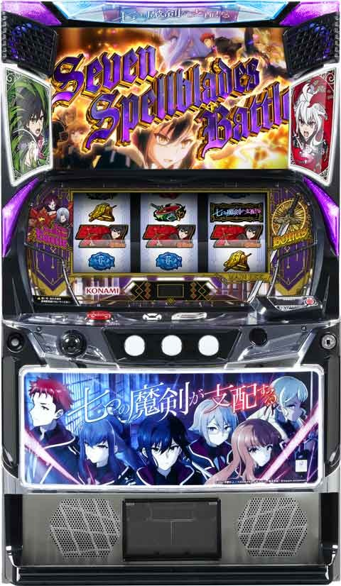
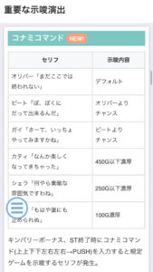
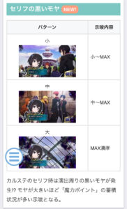
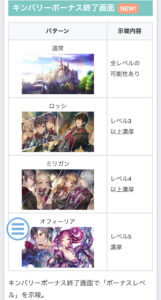
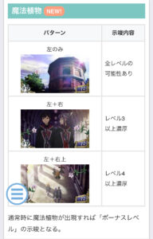
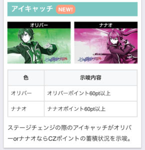
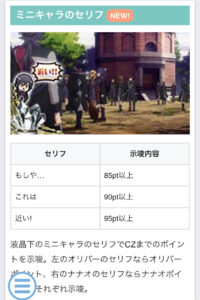
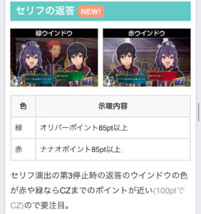
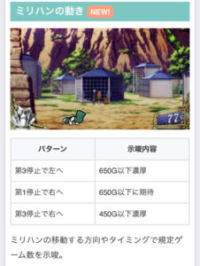

L七つの魔剣が支配する

※カバネリの仕様に似てる
【天井情報】
1000G+α プロローグボーナス当選
設定変更時は650G+αに短縮
※キンバリーボーナスではリセットされない、駆け抜け後短縮
【リセット判別】
コナミのためガックンあり？
【有利区間について】
有利区間リセットで七つの支配トリガー突入？
有利区間切れ条件
条件は不明だが一撃2000枚超えている場合は有利切れして上位AT突入してそう？
狙い目
【リセット狙い】
積極派 60GからST当選まで
慎重派 180GからST当選まで
100ゾーン 60Gから
【プロローグボーナス間天井狙い】
510Gから
駆け抜け後 200Gから
一撃2000枚以上後（上位AT後） 0Gからボーナス当選まで
※一撃2500枚以上後であれば高確率で7つのツラヌキループ突入してそう。
※有利切れ後は１回目のボーナスでプロローグボーナス確定
【ゾーン狙い】
100ゾーン狙い 70Gから
450ゾーン狙い 420Gから
【魔力ポイント狙い】
モヤの大きさが大なら魔力ポイント解放まで
【有利区間切れ狙い】
差枚+1500枚上 100ゾーン 50Gから
やめ時
ST後即やめ？
コナミコマンドでボーナス近い示唆出たら続行？450G以内濃厚なら続行？
CZポイントはST当選でリセットされるかも？現状は不明。
その他（諸々の示唆）








参考元
基本情報
- メーカー: コナミアミューズメント
- 機械割: 97.9% 〜 111.0%
- 導入開始日: 2025年01月20日（月）
- ゲーム性概要: ●純増は約2.7枚or約5.4枚/Gの魔剣BONUSを搭載したAT機 ●通常時はおもにレア役契機のCZで初当りボーナスに当選 ●勝利期待度平均77%のバトル型ST勝利で魔剣BONUSへ ●魔剣BONUS中は枚数上乗せ＆ST対戦相手昇格を抽選 ●複数ある条件達成で七つの支配トリガーが発動 ●七つのツラヌキループ中はST勝利で再び七つの支配トリガーが発動


打ち方
打ち方・小役
打ち方（小役狙い）
「フリー打ちでOK」

レア役の取りこぼしがないので、左1stであればオールフリー打ちで問題ない。
「レア役の停止形（一例）」

レア役はすべてリプレイフラグ。
変則押しはNG

通常時、押し順ナビなし時は左リール第1停止での消化を推奨する。
リーチ目／出目法則
小役以上1確目
「左リール中段に白7をビタ押し」 中段に白7がビタ止まりすれば小役以上1確。小役成立がチャンスとなる剣花団チャンス中やSTの小役連タイプなどでオススメだ。 ちなみに、白7を下段にビタ押しした場合、4コマスベってベルが上段に止まれば小役以上1確となる。

［下段白7ビタ時の小役以上1確目］

解析情報通常時
小役関連
レア役確率
| 役 | 通常 | レア役高確 |
|---|---|---|
| 弱チェリー | 1/60.3 | 1/20.1 |
| 強チェリー | 1/885.6 | 1/295.2 |
| 弱スイカ | 1/67.2 | 1/22.4 |
| 強スイカ | 1/771.0 | 1/257.0 |
| チャンス目 | 1/149.6 | 1/49.9 |
| 混合役 | 1/993.0 | 1/331.0 |
| レア役合算 | 1/24.0 | 1/8.0 |
成立役ごとの状態移行抽選
| 役 | 抽選 |
|---|---|
| 弱スイカ | スイカ優遇状態（スイカで好機）移行抽選 |
| 弱チェリー | チェリー優遇状態（チェリーで好機）移行抽選 |
| チャンス目 | スイカ優遇状態、チェリー優遇状態、 レア役高確率をトリプル抽選 |
CZポイント優遇状態＆レア役高確率移行率
| 役 | スイカで好機 | チェリーで好機 | レア役高確率 |
|---|---|---|---|
| 弱スイカ | 25.0% | ー | ー |
| 弱チェリー | ー | 12.5% | ー |
| チャンス目 | 12.5% | 6.3% | 10.2% |
※レア役高確率は100Gごとの抽選でも移行
スイカで好機・チェリーで好機移行時は20G、レア役高確率は10G以上の保証ゲーム数を獲得する。
内部状態関連
アングスタヴィア高確

規定ゲーム数消化時に突入する奈落を渡る糸（アングスタヴィア）の高確率状態。滞在中は 強レア役成立でアングスタヴィア当選濃厚 になる 。 基本的にはステージとゲーム数表記の色が変化してアングスタヴィア高確滞在を示唆するが、見た目が変化しないケースもある。
アングスタヴィア高確性能
| 項目 | 内容 |
|---|---|
| 移行契機 | 377G消化時の一部、777G消化時 |
| 継続ゲーム数 | 16G |
| 滞在中の抽選 | 強レア役成立でアングスタヴィア濃厚 |
| 滞在示唆 | 夕方ステージへ移行し、ゲーム数表示が紫に変化 |
※CZ当選により、移行ゲーム数がズレる可能性あり
「滞在示唆」

アングスタヴィア高確中は演出にグレンヴィルが出現するパターンの発生頻度がアップするため、アングスタヴィア高確に滞在している場合は通常ステージでもグレンヴィルが出現やすい。
レア役高確率
チャンス目での抽選や100G消化ごとに移行するレア役の高確率状態。10G＋α継続で、最低でも1回レア役が成立するまでは滞在し続ける。 押し順レア役時のナビは右1stがデフォルトで、中1stなら強レア役濃厚だ。

レア役高確率中のレア役確率
| 役 | 確率 |
|---|---|
| 弱チェリー | 1/20.1 |
| 強チェリー | 1/295.2 |
| 弱スイカ | 1/22.4 |
| 強スイカ | 1/257.0 |
| チャンス目 | 1/49.9 |
| 混合役 | 1/331.0 |
| レア役合算 | 1/8.0 |
CZポイント
CZポイント概要

スイカ成立時にオリバーポイントを、チェリー成立時にナナオポイントを獲得していき、規定の100ptに到達すると対応したCZに突入。両方のポイントを同時に貯めた場合はデュアルチャンスに突入する。
成立役ごとのポイント＆突入CZ
| 役 | ポイント | 突入CZ |
|---|---|---|
| 弱or強スイカ | オリバーポイント | 剣花団チャンス |
| 弱or強チェリー | ナナオポイント | 魔剣チャンス |
| 混合役 | 両方のポイント | ー |
デュアルチャンスはどちらかの規定ポイント到達後の前兆中に、もう片方のポイントが貯まればに突入。混合役で両方いっぺんに規定ポイントに到達して突入する場合もある。
1契機で獲得できるCZポイント量
| 役 | 通常中 | スイカで好機中 | チェリーで好機中 |
|---|---|---|---|
| 弱スイカ | 5pt以上 | 20pt以上 | 5pt以上 |
| 強スイカ | 30pt以上 | 50pt以上 | 30pt以上 |
| 弱チェリー | 5pt以上 | 5pt以上 | 20pt以上 |
| 強チェリー | 30pt以上 | 30pt以上 | 50pt以上 |
| 混合役 | 30pt以上 / 30pt以上 | 50pt以上 / 30pt以上 | 30pt以上 / 50pt以上 |
※緑文字はオリバーポイント、赤文字はナナオポイント ※獲得できるポイントは5or10or20or30or50or100pt
CZポイント優遇状態

レア役成立時の一部で、獲得CZポイントが優遇された状態へ移行。優遇状態滞在中は液晶左右に帯が出現する（画像は両方優遇状態だが、どちらか片方のみ優遇パターンもある）。
規定ゲーム数
規定ゲーム数消化時の抽選
消化ゲーム数に応じて、レア役高確・ボーナス・アングスタヴィア高確移行を抽選する。 ゲーム数消化によるボーナス当選時は夜ステージ→前兆（迷宮探索）を経由して告知。アングスタヴィア高確中は七つの支配トリガーの1つである「奈落を渡る糸（アングスタヴィア）」の直撃抽選がおこなわれる。
規定ゲーム数消化時の抽選
| ゲーム数 | 抽選 |
|---|---|
| 100G消化ごと | レア役高確 |
| 100G・250G・450G・ 650G・1000G消化時 | ボーナス |
| 377G消化時の一部、777G消化時 | アングスタヴィア高確 （16G継続） |
ゲーム数消化時のポイント
| 抽選 | ポイント |
|---|---|
| 100G消化時 | ボーナス期待度約40% |
| 250G消化時 | ボーナス当選率に設定差あり |
| キンバリーBONUS | 天井までのゲーム数を引き継ぎ |
［前兆示唆］

ゲーム数契機のボーナス前兆中は基本的に夜ステージへ移行し、液晶右下のゲーム数表示の色が変化。色は青よりも赤がアツい。
［レア役高確率］

100G消化時やチャンス目の抽選で移行する押し順レア役の高確率状態。最低でも1回レア役が出現するまで継続する。
剣花団チャンス（CZ）
剣花団チャンス概要

オリバーポイントを契機に突入するCZ。小役が入賞するごとに仲間が集結していき、全員集まればボーナスに当選する。
剣花団チャンス性能
| 項目 | 内容 |
|---|---|
| 突入契機 | 規定オリバーポイント獲得 |
| 継続ゲーム数 | 9G |
| 消化中の抽選 | 小役入賞で仲間を集めるほど期待度アップ （レア役は2人以上集結に期待） |
| ボーナス期待度 | 約40% |
「仲間集結」

集結するごとにエフェクトの色も昇格していく。
仲間の集結人数振り分け
| 役 | 1人集結 | 2人集結 | 全員集結 |
|---|---|---|---|
| リプレイ | 99.2% | 0.4% | 0.4% |
| ベル | 99.2% | 0.8% | － |
| 弱チェリー | 50.0% | 49.6% | 0.4% |
| 強チェリー | － | 75.0% | 25.0% |
| 弱スイカ | 50.0% | 49.6% | 0.4% |
| 強スイカ | － | 50.0% | 50.0% |
| チャンス目 | 50.0% | 49.6% | 0.4% |
| 混合役 | － | 50.0% | 50.0% |
魔剣チャンス（CZ）
魔剣チャンス概要

ナナオポイントを契機に突入するCZで、狙え3回以内に魔剣目が止まればボーナス確定。レア役成立時は狙え回数の減算ストップ抽選がおこなわれる。
魔剣チャンス性能
| 項目 | 内容 |
|---|---|
| 突入契機 | 規定ナナオポイント獲得 |
| 継続ゲーム数 | 狙え3回＋αまで |
| 消化中の抽選 | 狙え成功でボーナス、30G経過時もボーナス （レア役は狙え回数減算ストップ抽選） |
| ボーナス期待度 | 約46% |
| その他 | 減算ストップ中に成功した場合、 残りゲーム数は次の魔剣チャンスに持ち越し |
「魔剣目を狙え」

「減算ストップ」

強レア役なら長いゲーム数ストップする可能性大。減算ストップ中に成功した場合は、残った回数を次回の魔剣チャンスへ持ち越し。デュアルチャンスに当選した場合も減算回数が持ち越される（有利区間リセット時を除く）。
ゲーム数減算ストップ当選率
| 役 | 5G | 10G |
|---|---|---|
| 弱チェリー | 約50% | － |
| 強チェリー | 約50% | 約50% |
| 弱スイカ | 約33% | － |
| 強スイカ | 約75% | 約25% |
| チャンス目 | 約50% | － |
| 混合役 | 約50% | 約50% |
デュアルチャンス（複合CZ）
デュアルチャンス概要

オリバーポイントとナナオポイントが同時に規定に到達すると突入する高期待度CZ。2つのCZが同時に進行していき、いずれか1つをクリアすればボーナス確定、 2つともクリアした場合はデュアルドミネイトモードを獲得 する。
デュアルチャンス性能
| 項目 | 内容 |
|---|---|
| 突入契機 | 両方のポイントが規定数に到達 |
| 継続ゲーム数 | 両方のCZが終了するまで |
| 消化中の抽選 | 各CZを同時におこない、1つ成功でボーナス、 両方成功でデュアルドミネイトモードへ |
| 消化中の抽選 | ベル揃い時はメンバー集結に加えて、 魔剣目を狙えの減算ストップ抽選あり |
| ボーナス以上期待度 | 約73% |
「消化中の画面」

左上に剣花団チャンスの残りゲーム数、右上に魔剣チャンスの残り狙え回数が表示。液晶左右のアイコンには集結している仲間が表示されている。
「魔剣目を狙えがアツい」

狙え発生時は魔剣目が止まれば魔剣チャンス成功。止まらなかった場合はベルorリプレイなので、剣花団チャンスのメンバー参加濃厚となる。
ゲーム数減算ストップ当選率
| 役 | 3G | 5G | 10G |
|---|---|---|---|
| 上段ベル | 約75% | － | － |
| 弱チェリー | － | 約50% | － |
| 強チェリー | － | 約50% | 約50% |
| 弱スイカ | － | 約33% | － |
| 強スイカ | － | 約75% | 約25% |
| チャンス目 | － | 約50% | － |
| 混合役 | － | 約50% | 約50% |
デュアルチャンス中はレア役での抽選に加え、上段ベルでも減算ストップが抽選される。上段ベルでの抽選が有効なのは、2つのCZのゲーム数が両方とも残っている場合のみ。 上段ベルで減算ストップに当選した場合、演出的には剣花団チャンスの仲間獲得を優先するため、無演出で減算ストップが発動する。
仲間の集結人数振り分け
抽選値は剣花団チャンス中と同じ。
魔力ポイント
魔力ポイント概要
CZ失敗時、ST非当選のキンバリーBONU終了時、ST駆け抜け時に内部的にポイントを獲得していき、 MAXになると次回ST勝利時に七つの支配トリガーが発動 。獲得を示唆する演出はないが、蓄積状況を示唆する演出は存在する。
魔力ポイント性能
| 項目 | 内容 |
|---|---|
| 獲得契機 | CZ失敗時、ST駆け抜け時 ST非当選のキンバリーBONUS終了時、 |
| MAX時の恩恵 | ST勝利時に七つの支配トリガーが発動 |
魔力ポイント示唆はコチラ
解析情報ボーナス時
初当りボーナス
キンバリーBONUS概要

REGに相当するボーナス。15枚ベルの2択当てやレア役でミニキャラを全員集めればSTに当選。全員集められられなくても、最終ゲームで人数に応じたST抽選がおこなわれる。
キンバリーBONUS性能
| 項目 | 内容 |
|---|---|
| 突入契機 | 初当り時の約1/2 |
| 継続ゲーム数 | 20G |
| 1Gあたりの純増 | 約4.0枚 |
| 消化中の抽選 | 15枚ベルの2択当てとレア役でミニキャラを集め、 最終ゲームでSTの当否をジャッジ |
「ミニキャラ抽選」

15枚ベル成立時は2択当てが発生し、正解で必ず1人以上を獲得。レア役は1人以上、強レア役なら2人以上獲得濃厚だ。
プロローグBONUS概要

ST突入確定のボーナス。消化中はSTの対戦相手昇格が抽選される。
プロローグBONUS性能
| 項目 | 内容 |
|---|---|
| 突入契機 | 初当り時の約1/2 |
| 継続ゲーム数 | 30G |
| 1Gあたりの純増 | 約4.0枚 |
| 消化中の抽選 | レア役でSTの対戦相手昇格を抽選 |
ボーナスレベル
ボーナスの種別（キンバリーBONUS orプロローグBONUS）決定に関わるボーナスレベルが存在。高レベルほどプロローグBONUSが選択されやすくなる。 初期レベルは設定変更時とST終了時に決定し、以降は キンバリーBONUS終了時に必ず1段階アップ 。キンバリーBONUS終了画面や通常時の演出にレベル示唆要素が存在する。
ボーナスレベル
| 項目 | 内容 |
|---|---|
| レベル抽選契機 | 設定変更時・ST終了時・キンバリーBONUS終了時 |
| 高レベルの特徴 | プロローグBONUSの選択割合アップ |
ボーナスレベルごとのプロローグBONUS期待度
| レベル | 期待度 |
|---|---|
| レベル3 | 50%以上 |
| レベル4 | 70%以上 |
| レベル5 | 100% |
ミニキャラ獲得時の振り分け
| 役 | 1人 | 2人 | 3人 | 全員獲得 |
|---|---|---|---|---|
| 2択正解 | 96.9% | 2.7% | 0.4% | ー |
| 弱チェリー | 87.5% | 12.1% | 0.4% | ー |
| 強チェリー | ー | 33.2% | 33.2% | 33.6% |
| 弱スイカ | 75.0% | 24.6% | 0.4% | ー |
| 強スイカ | ー | 50.0% | 25.0% | 25.0% |
| チャンス目 | 50.0% | 49.6% | 0.4% | ー |
| 混合役 | ー | 25.0% | 25.0% | 50.0% |
セブンスペルブレイズバトル（ST）
ST概要

20G＋ジャッジ2GのバトルSTで、バトルに勝利すれば魔剣ボーナスに突入。STとボーナスの流れを繰り返すことで出玉増加を目指すゲーム性で、STには勝利期待度やゲーム性の異なる7人の対戦相手が存在する。
セブンスペルブレイズバトル性能
| 項目 | 内容 |
|---|---|
| 突入契機 | プロローグBONUS後、 キンバリーBONUS中の抽選 |
| 継続ゲーム数 | ST20G＋ジャッジ2G |
| STの抽選 | バトル勝利で魔剣BONUSへ |
| ジャッジ中の抽選 | リプレイの約50%で勝利、レア役は勝利濃厚 |
| 平均継続率 | 約77% |
対戦相手・バトルタイプ一覧
| 対戦相手 | タイプ | 勝利期待度 |
|---|---|---|
| オルブライト | 小役連 | 低 |
| ガルダ | レア役高確 | ↓ |
| 合成獣 | フリーズ | ↓ |
| ステイシー＆フェイ | 小役連 | ↓ |
| ロッシ | レア役高確 | ↓ |
| ミリガン | 7揃い | ↓ |
| オフィーリア | 全タイプの可能性あり | 高 |
バトルタイプごとの抽選内容
| タイプ | 内容 |
|---|---|
| 小役連 | ● 小役が連続するほど勝利期待度アップ ● 2連以上した後はジャッジ演出が発生 |
| レア役高確 | ● レア役確率が約3倍にアップ（約1/8） |
| フリーズ | ● 成立役に応じてフリーズレベルアップを抽選（リプレイとレア役はレベルアップ濃厚） ● 毎ゲーム、フリーズレベルに応じたフリーズ抽選がおこなわれる |
| 7揃い | ● 成立役に応じて7揃い高確への移行を抽選 ● 7揃い高確は最低5G継続 ● 7が揃えば勝利 |
オフィーリアに勝利で七つの支配トリガー獲得濃厚（七つのツラヌキループ発動も濃厚）。もちろん、オフィーリア以外に勝利した場合も七つの支配トリガーを獲得する可能性はある。
「目指すはオフィーリアの撃破!!」

オフィーリアを倒すと七つの支配トリガーを獲得するので、ST中のひとまずの目標はオフィーリアを倒すこと。オフィーリアの出現頻度は低いが、完全勝利した対戦相手はオフィーリアとのバトルが発生するまで当該STに出現しなくなる。
［完全勝利］

勝利告知が発生したゲームで小役が入賞すると完全勝利。完全勝利した場合は魔剣BONUSのゲーム数が＋10Gされる。
「ファイナルジャッジ」

20Gで勝利できなかった場合のラストチャンス。
【バトルタイプ】
「小役連」


小役入賞1回でレベル1、2連すればレベル2というように、小役の連続回数に応じてレベルがアップ。小役連が途切れた段階のレベルに応じて勝利抽選がおこなわれる（ジャッジはレベル2以上で発生）。
「レア役高確」

レア役合算確率が通常の3倍の約1/8までアップ。レア役成立で勝利のチャンス！
「フリーズ」

成立役に応じてフリーズレベル（液晶枠色）がアップ。毎ゲーム、現在のフリーズレベルに応じたフリーズ抽選をおこない、フリーズ発生で勝利となる。
「7揃い」


成立役に応じて7揃い高確への移行を抽選。7揃い高確は最低5G継続し、滞在中に7が揃えば勝利確定だ。
小役連回数別・勝利期待度
| 回数 | 期待度 |
|---|---|
| 2連（レベル2） | 約10% |
| 3連（レベル3） | 約50% |
| 4連（レベル4） | 約80% |
| 5連（レベル5） | 勝利濃厚 |
小役の合算確率は約1/3。 勝利抽選自体は全役でおこなわれていて、レア役は勝利のチャンス。小役連タイプにはオルブライトとステイシー＆フェイの2人が存在するが、ステイシー＆フェイの方がタイプ不問の直撃抽選の当選率が高い。
レア役での勝利当選率
| 役 | オルブライト | ステイシー＆フェイ |
|---|---|---|
| 弱レア役 | 25.0% | 50.0% |
| 強レア役 | 67.0% | 80.0% |
※ステイシー＆フェイはリプレイでの抽選も優遇される
レベル1（枠色が青）の状態で発展したら勝利濃厚だ。
レア役成立時・勝利期待度
| 役 | ガルダ | ロッシ |
|---|---|---|
| 弱レア役 | 約25% | 約50% |
| 強レア役 | 約67% | 約80% |
※弱レア役…弱チェリー、弱スイカ、チャンス目 ※強レア役…強チェリー、強スイカ、混合役
通常状態に比べ、レア役確率が約1/8にアップしている。
帯色別・勝利期待度
| 帯色 | 期待度 |
|---|---|
| 白 | 約48% |
| 青 | 約50% |
| 黄 | 約58% |
| 緑 | 約77% （フリーズ確率約1/8） |
| 赤 | 約90% （フリーズ確率約1/3） |
小役成立時に帯色の昇格を抽選していて、リプレイとレア役は帯色昇格濃厚。 帯色の昇格とは別に全役での勝利抽選もあり、レア役はチャンスとなる。
枠色昇格当選率
| 役 | 当選率 |
|---|---|
| ベル | 約33% |
| リプレイ・レア役 | 100% |
レア役での勝利当選率
| 役 | 合成獣 | オフィーリア |
|---|---|---|
| 弱レア役 | 25.0% | 50.0% |
| 強レア役 | 67.0% | 80.0% |
※オフィーリアはフリーズタイプ選択時の数値。リプレイでの抽選も優遇される
7揃い高確移行率
| 役 | 5G | 無限 |
|---|---|---|
| ベル | 約25% | ー |
| リプレイ | 約50% | ー |
| 弱レア役 | 約75% | 約25% |
| 強レア役 | 約25% | 約75% |
7揃い高確の抽選値
| 項目 | 抽選値 |
|---|---|
| 継続ゲーム数 | 5G以上 |
| 7揃い確率 | 約1/7 |
ファイナルジャッジ

STゲーム数消化後のラストチャンス。リプレイでも約50%で勝利、レア役を引けば勝利濃厚だ。
ファイナルジャッジ中の勝利期待度
| 役 | 期待度 |
|---|---|
| リプレイ | 約50% |
| レア役 | 100% |
完全勝利後の敵の振り分け
完全勝利した相手は当該STに登場せず、以降のバトルではその対戦相手よりも上位の相手の選択率がアップ。 例えば上画像の場合、ステイシー＆フェイとロッシの2人に完全勝利しているので、この2人分の振り分けがミリガンとオフィーリアに加算される。

バトル開始前の抽選
タイトル画面や対戦相手決定ルーレット中はレア役で勝利を抽選。内部的に勝利が決まった状態で自力で勝利した場合、魔剣ボーナス開始時から強化魔法orレア役高確率or魔剣目高確率を獲得できる。 自力で勝利できなかった場合はファイナルジャッジで勝利が告知される。

魔剣BONUS
魔剣BONUS概要

出玉増加のメインとなる擬似ボーナス。消化中は 次のSTの対戦相手昇格抽選やボーナスゲーム数の上乗せ抽選 がおこなわれる。 ボーナスが下段に揃って始まると、ボーナス開始時に強化魔法（超）高確率からスタートする。 冒頭5Gのエピソード中は、レア役で強化魔法・レア役高確率・魔剣目高確率のいずれかを必ず獲得、強レアなら2個以上獲得できる。
魔剣ボーナス性能
| 項目 | 内容 |
|---|---|
| 突入契機 | ST勝利後 |
| 継続ゲーム数 | 40G＋α |
| 1Gあたりの純増 | 約2.7枚 or 約5.4枚 |
| 成立役に応じた抽選 | ゲーム数上乗せ、対戦相手昇格、魔剣目高確率、 強化魔法高確率、強化魔法、七つの支配トリガー |
| ボーナス100G 継続時の抽選（※） | レア役高確率or魔剣目高確率へ移行 |
※ゲーム数上乗せを重ねて、ボーナス消化ゲーム数が100Gに到達するごとに抽選
「魔剣目を狙え」


魔剣目停止でSTの対戦相手が昇格。液晶左下に対戦相手のアイコンが表示されていて、そのキャラよりも下位の相手が出現しない（魔剣目停止ごとにアイコンのキャラが昇格していく）。 強魔剣目なら対戦相手昇格＋デュアルドミネイトモードへ突入する。
「強化魔法」

強化された小役成立時のゲーム数上乗せ抽選が優遇される状態。一度に複数の小役が強化されることもあり、各強化状態は20G継続する。
［強化魔法高確率］

強化魔法獲得の高確率状態。
「レア役高確率」

押し順レア役確率がアップした状態。
「魔剣目高確率」

魔剣目確率アップ状態。
エピソード＆アイコン開放タイミング

魔剣BONUS開始から5G間はエピソードが発生。エピソード中のレア役成立時は強化魔法・レア役高確率・魔剣目高確率のいずれかを必ず獲得、強レア役時は複数の恩恵獲得濃厚だ。
強レア役時の恩恵個数振り分け
| 恩恵 | 振り分け |
|---|---|
| 2個 | 約75% |
| 3個 | 約25% |
「液晶右下に注目」

エピソード開始時に液晶右下に剣アイコンが表示されていれば、七つの支配トリガー獲得確定。どのタイミングでアイコンが開放されるかで、出てくる七つの支配トリガーを示唆している。
アイコン開放タイミング別の七つの支配トリガー
| タイミング | トリガー |
|---|---|
| 魔剣BONUS開始時 | ● デュアルドミネイトモード ● 魔力覚醒 ● 強化魔法超高確率 |
| 魔剣BONUS消化中 または終了時 | ● ナナオ斬フリーズ ● Vストック ● 奈落を渡る糸（アングスタヴィア） |
白7揃いライン別の恩恵
| ライン | 恩恵 |
|---|---|
| 右上がり | デフォルト |
| 下段 | 強化魔法（超）高確率スタート |
| ひし形 | 魔力無尽突入 |
ボーナス当選時の約1/7で、下段揃いが選択される。
強化魔法性能
| 項目 | 内容 |
|---|---|
| 継続ゲーム数 | 各20G |
| 消化中の抽選 | 対応役成立でゲーム数上乗せ濃厚 |
強化魔法ごとの対応役
| 強化魔法 | 対応役 |
|---|---|
| チェリー | チェリー・混合役 |
| スイカ | スイカ・混合役 |
| チャンス目 | チャンス目 |
| ベル | ナビなしベル |
| リプレイ | リプレイ |
ボーナスのゲーム数が0になっても、強化魔法が発動している間はボーナスが継続する。
レア役高確率性能
| 項目 | 内容 |
|---|---|
| 継続ゲーム数 | 20G |
| レア役確率 | 約1/8 |
魔剣目高確率性能
| 項目 | 内容 |
|---|---|
| 継続ゲーム数 | 20G |
| 魔剣目確率 | 通常の約2倍 |
［レア役高確率］

［魔剣目高確率］

強化魔法（超）高確率
| 項目 | 高確率 | 超高確率 |
|---|---|---|
| 継続ゲーム数 | 20G〜50G | 20G～100G |
| 強化魔法獲得確率 | 1/18.0 | 1/5.0 |
強化魔法高確率移行率
| 役 | 移行率 |
|---|---|
| 弱チェリー | 13.7% |
| 弱スイカ | 27.5% |
| チャンス目 | 16.4% |
強化魔法高確率はおもにレア役成立時の抽選、超高確率は七つの支配トリガー発動時の一部で移行する。
強化魔法獲得当選率
| 役 | 通常中 | 強化魔法高確率中 |
|---|---|---|
| リプレイ | ー | 25.0% |
| 弱チェリー | 1.6% | ゲーム数上乗せor 強化魔法獲得濃厚 |
| 弱スイカ | 11.2% | ゲーム数上乗せor 強化魔法獲得濃厚 |
| チャンス目 | 28.1% | ゲーム数上乗せor 強化魔法獲得濃厚 |
［強化魔法高確率］

［強化魔法超高確率］

七つの支配トリガー当選率
魔剣ボーナス中のレア役で七つの支配トリガー抽選をおこなう。当選する可能性があるのは、デュアルドミネイトモード・魔力覚醒・ナナオ斬フリーズ・強化魔法超高確率の4つ。
七つの支配トリガー当選率
| 役 | デュアル～ | 魔力覚醒 | ナナオ斬 フリーズ | 強化魔法 超高確率 |
|---|---|---|---|---|
| 弱チェリー | － | 0.3% | 0.3% | 0.4% |
| 弱スイカ | － | 0.3% | 0.3% | 1.3% |
| チャンス目 | － | 0.3% | 0.8% | 0.3% |
| 強チェリー | 1.0% | 1.0% | 5.5% | － |
| 強スイカ | 1.0% | 6.6% | 1.0% | － |
| 混合役 | 13.9% | 6.6% | 5.5% | － |
※デュアル～…デュアルドミネイトモード
ナナオ斬フリーズの上乗せ法則
| パターン | 法則 |
|---|---|
| 弱チェリー契機 | ＋200G以上 |
| 弱スイカ契機 | ＋300G濃厚 |
| ＋11G表示 | ナナオ斬フリーズ発生濃厚 |
| ＋20Gでフリーズ発生 | ＋200G以上 |
| ＋30Gでフリーズ発生 | ＋300G濃厚 |
［強化魔法ナシ］上乗せ当選率
| 役 | 当選率 |
|---|---|
| 弱チェリー | 約20% |
| 弱スイカ | 約10% |
| チャンス目 | 約25% |
| 強レア役 | 100% |
※弱スイカでの上乗せ当選時は＋20G以上、強レア役で七つの支配トリガーに当選した時はゲーム数を上乗せしない
対応する強化魔法を持っている場合は上乗せ濃厚。
［強化魔法アリ］成立役ごとの上乗せゲーム数
| 役 | 上乗せ |
|---|---|
| 弱チェリー | ＋20G以上 |
| 弱スイカ | ＋30G以上 |
| チャンス目 | ＋20G以上 |
七つの支配トリガー
七つの支配トリガー概要

全部で7種類の上乗せトリガー。獲得契機は複数あるが、STでオフィーリアに勝利して七つの支配トリガーを獲得した場合、以降のSTに勝利するたびに七つの支配トリガーを獲得する「七つのツラヌキループ」に突入する。
七つの支配トリガー性能
| 項目 | 内容 |
|---|---|
| 獲得契機 | ● デュアルチャンスを両方成功時 ● 通常時のレア役成立時の一部 ● ST勝利時の一部 ● AT中のレア役の一部 ● オフィーリアに勝利時 ● 魔力ポイントMAX時 |
| 獲得時の期待枚数 | ● 約1000枚 |
七つの支配トリガーの内容
| トリガー | 内容 |
|---|---|
| 奈落を渡る糸 （アングスタヴィア） | ● 10G間、フリーズが発生するたびにゲーム数を上乗せ ● フリーズのたびに上乗せゲーム数が＋10Gずつ増加する |
| デュアル ドミネイトモード | ● 純増と上乗せ性能が2倍にアップ ● 15枚ベルを引くたびにデュアルドミネイトモード自体の継続率がアップ（1セット20～50G） |
| 強化魔法超高確率 | ● 約1/5で強化魔法を獲得 |
| 魔力覚醒 | ● ベル・リプレイ・チャンス目・スイカ・チェリー全部の強化魔法を獲得 ● 魔剣目高確率・レア役高確率も複合して発動 |
| Vストック | ● ST勝利濃厚 ● 複数ストックの可能性あり |
| ナナオ斬フリーズ | ● 上乗せゲーム数を3桁に格上げするフリーズが発生 ● 複数回フリーズする可能性あり |
| 魔力無尽 | ● STにほぼ勝利する裏モード ● 有利区間終了まで滞在し続ける!? |
※上乗せ…ボーナスゲーム数の上乗せ
七つの支配トリガーは2つ以上が複合することもある。
例えば、強化魔法超高確率とデュアルドミネイトモードが複合した場合、強化魔法5個がデュアルドミネイトモードで2つに分割されるので、ダブルで抽選を受けることができる。
「奈落を渡る糸（アングスタヴィア）」


レバーON〜第3停止までの各トリガーでフリーズが発生すればボーナスゲーム数を上乗せ。1Gで複数回のフリーズが発生することもある。フリーズが発生するごとに＋10G→＋20G→＋30Gと上乗せされるゲーム数が10Gずつ増加していく。
アングスタヴィアの注目ポイント
| No. | ポイント |
|---|---|
| 1 | リプレイorレア役成立時は必ずフリーズ発生 |
| 2 | 各トリガーごとのフリーズ確率は約1/6 |
| 3 | 10G（40トリガー）での平均フリーズ回数は6～7回 |
| 4 | 平均上乗せゲーム数は250G |
「デュアルドミネイトモード」


純増と上乗せ性能が2倍にアップ。1セット20〜50G継続で、15枚ベルを引くたびに液晶のエフェクト色が昇格していき、デュアルドミネイトモード継続の期待度がアップする（ラストでシャッターが開けば継続）。
「強化魔法超高確率」

約1/5で強化魔法を獲得できる、強化魔法獲得に特化した状態。
「魔力覚醒」

ベル・リプレイ・チャンス目・スイカ・チェリーすべての強化魔法が発動した状態。さらに、魔剣目高確率とレア役高確率も発動する。
「Vストック」

ST勝利確定。複数ストックすることもある。
「ナナオ斬フリーズ」

100G以上を上乗せするフリーズが発生。一度の契機で複数のフリーズをストックする可能性あり。
「魔力無尽」

デュアルドミネイトモードの継続抽選
最終ゲームまでに昇格させた帯色で、デュアルドミネイトモードの継続期待度が変化。青の継続期待度は低いが、継続した場合は約50%で次セットの継続ゲーム数が30G以上になる。

帯色ごとの継続率
| 色 | 継続率 |
|---|---|
| 白 | 80.0% |
| 青 | 12.5% |
| 黄 | 25.0% |
| 緑 | 75.0% |
| 赤 | 99.0% |
ツラヌキ・有利区間
ツラヌキ条件と恩恵
| 項目 | 内容 |
|---|---|
| 条件 | STでオフィーリアに勝利 |
| 恩恵 | 七つのツラヌキループが発動 |
オフィーリアに勝利して七つの支配トリガーが発動した場合、その後もSTで勝利するたびに七つの支配トリガーが発動する（ST敗北まで継続）七つのツラヌキループへ移行。七つの支配トリガー1回あたりの期待枚数が約1000枚、STの平均勝利期待度が約77%なので、約1000枚が約77%でループする強力な状態だ。
STタイトル画面でのツラヌキ判別
STのタイトル画面は1Gがデフォルト。2G以上続いた場合はツラヌキバトル（バトル勝利でツラヌキループ発動）濃厚となる。 見た目上、対戦相手がオフィーリア以外のケースがあるが、内部的にはツラヌキバトルとなっている。

演出情報
通常時
演出別のCZポイント示唆
| 演出 | パターン | 示唆 |
|---|---|---|
| セリフの 第3停止時の返答 | 緑ウインドウ | オリバーポイント85pt以上 |
| セリフの 第3停止時の返答 | 赤ウインドウ | ナナオポイント85pt以上 |
| ミニキャラの セリフ | もしや… | セリフのキャラのポイント85pt以上 |
| ミニキャラの セリフ | これは！ | セリフのキャラのポイント90pt以上 |
| ミニキャラの セリフ | 近い!! | セリフのキャラのポイント95pt以上 |
| ステージチェンジの アイキャッチ | オリバー | ナナオポイント60pt以上 |
| ステージチェンジの アイキャッチ | ナナオ | ナナオポイント60pt以上 |
［セリフ返答：緑ウインドウ］

［セリフ返答：赤ウインドウ］

［ミニキャラのセリフ］

オリバーのセリフはオリバーポイント、ナナオのセリフはナナオポイントを示唆する。
［アイキャッチ：オリバー］

［アイキャッチ：ナナオ］

セリフ演出に登場するキャラごとの示唆
| キャラ | 示唆 |
|---|---|
| ロッシ | ● 期待度：低 |
| アンドリューズ | ● ロッシより規定ゲーム数が浅いことを示唆 |
| ステイシー | ● アンドリューズより規定ゲーム数が浅いことを示唆 ● 650G以下の期待度：大 |
| フェイ | ● ステイシーより規定ゲーム数が浅いことを示唆 ● 650G以下の期待度：特大 |
| カルロス | ● 650G以下濃厚 |
| ゴッドフレイ | ● 450G以下濃厚 |
ミリハンの動きパターン・示唆内容
| 動く方向 | タイミング | 示唆 |
|---|---|---|
| 左へ | 第3停止時 | 650G以下濃厚 |
| 右へ | 第1停止時 | 650G以下に期待 |
| 右へ | 第3停止時 | 450G以下濃厚 |
キンバリーBONUS・ST終了画面での コナミコマンド入力時のボイス別示唆
| ボイス | 示唆 |
|---|---|
| オリバー「まだここでは終われない！」 | デフォルト |
| ピート「ぼ…僕にだって出来るんだ！」 | オリバーよりチャンス |
| ガイ「さーて、いっちょやってみますかね」 | 650G以下の期待大 |
| カティ「なんか楽しくなってきちゃった♪」 | 450G以下濃厚 |
| シェラ「何やら素敵な雰囲気ですわね」 | 250G以下濃厚 |
| ナナオ 「はっはっは。誰にも止められぬ勢いでござるな！」 | 100G濃厚 |
※コナミコマンド…上上下下左右左右PUSH
ステージ移行タイミングでの示唆
| パターン | 示唆 |
|---|---|
| 昼から昼 | ● 昼ステージ同士（校舎内と校舎外）の移行ゲーム数が40G以内であれば天井が450G以下濃厚 |
※CZ失敗後、1回目のステージチェンジを除く
校舎内に41G以上滞在後、校舎外へ移行するのがデフォルト（逆のパターンも同様）。 昼ステージ同士の移行が対象となるため、レア役やゲーム数消化での前兆を挟んだ場合は判別ができない。
［セリフ演出：ロッシ］

［セリフ演出：アンドリューズ］

［セリフ演出：ステイシー］

［セリフ演出：フェイ］

［セリフ演出：カルロス］

［セリフ演出：ゴッドフレイ］

［ミリハン左へ］

［ミリハン右へ］

ボーナスレベル示唆演出
| 演出 | パターン | 示唆 |
|---|---|---|
| 魔法植物 | 左のみ | 全レベルの可能性あり |
| 魔法植物 | 左＋右 | レベル3以上濃厚 |
| 魔法植物 | 左＋右上 | レベル4以上濃厚 |
| キンバリーBONUS 終了画面 | 通常 | 全レベルの可能性あり |
| キンバリーBONUS 終了画面 | ロッシ | レベル3以上濃厚 |
| キンバリーBONUS 終了画面 | ミリガン | レベル4以上濃厚 |
| キンバリーBONUS 終了画面 | オフィーリア | レベル5濃厚 |
［魔法植物：左のみ］

［魔法植物：左＋右］

［魔法植物：左＋右上］

［キンバリーBONUS終了画面：通常］

［キンバリーBONUS終了画面：ロッシ］

［キンバリーBONUS終了画面：ミリガン］

［キンバリーBONUS終了画面：オフィーリア］

カルステのセリフ・示唆内容
| セリフ | モヤ | ポイント |
|---|---|---|
| この魔力は…！？ | 小 | 少～MAX |
| 魔力が貯まりつつありますね…マイロード | 中 | 中～MAX |
| 魔力がみなぎっていますね…マイロード | 大 | MAX濃厚 |
レバーON時に上記のカルステのセリフが発生した場合、第3停止時に液晶の四隅から黒いモヤが発生。モヤの段階で魔力ポイントの蓄積量を示唆している。
［モヤ：小］

［モヤ：中］

［モヤ：大］

アイキャッチごとの示唆
| アイキャッチ | 示唆 |
|---|---|
| 夜（月あり） | 本前兆期待度アップ |
| タイトル | 本前兆期待度アップ |
| オリバー | オリバーpt60pt以上保有 |
| ナナオ | ナナオpt60pt以上保有 |
| 特殊 | 次回ボーナスがプロローグBONUS濃厚 |
［デフォルト］

［夜（月あり）］

［タイトル］

［オリバー］

［ナナオ］

［特殊］

ミニキャラ系演出法則
| 演出 | パターン | 法則 |
|---|---|---|
| 剣花団集合 | オリバー1人 | ● ハズレorベル |
| 剣花団集合 | 3人 | ● ベルorリプレイ |
| 剣花団集合 | 5人 | ● レア役 |
| 剣花団集合 | 6人 | ● CZ本前兆濃厚 |
| ピート | 白 | ● ハズレを含む全役 |
| ピート | 青 | ● リプレイ |
| ピート | 黄 | ● ベル |
| ピート | 緑 | ● スイカ |
| ピート | 赤 | ● チェリー |
| ピート | 紫 | ● チャンス目or混合役 |
| ガイ | ビン | ● リプレイ |
| ガイ | パン | ● リプレイ ● ベルならCZ本前兆 |
| ガイ | 魔法植物 | ● レア役 |
| カティ | ナメクジ | ● ベル |
| カティ | 魔法蚕 | ● ベル ● リプレイならCZ本前兆 |
| カティ | マルコ | ● レア役 |
告知発生タイミングが第3停止時ならチャンス。
［剣花団集合：オリバー1人］

［剣花団集合：6人］

［ピート：紫］

［ガイ：魔法植物］

［カティ：マルコ］

レア役成立時の次回ST対戦相手示唆
通常時のレア役成立時に点灯する液晶左右のランプの点灯パターンで、次のSTでの対戦相手を示唆する。
ランプの点灯パターン別・次回ST対戦相手示唆
| ランプ | 示唆 |
|---|---|
| 小 | デフォルト |
| 中 | ステイシー＆フェイ以上 |
| 大 | ミリガン以上 |
［ランプ点灯パターン］

前兆
迷宮探索

おもに規定ゲーム数消化時に夜ステージを経由して突入する。滞在エリア（5段階）が進むほど本前兆期待度がアップ。ラストの連続演出成功でボーナス確定だ。
「エリア進行」

エリアが進むほどチャンス！
「連続演出」

赤タイトルはチャンスアップ。
CZ前兆法則
| パターン | 法則 |
|---|---|
| 前兆ゲーム数 | ● ショート（4～8G）とロング（15～20G）の2種類 ● ロングは本前兆の期待度アップ ● 前兆20Gは本前兆濃厚 |
| 滞在ステージ | ● 夕方移行でロング前兆濃厚 ● 夕方移行時のCZ期待度は37.5% |
［夕方］

ボーナス前兆法則
| パターン | 法則 |
|---|---|
| ゲーム数表示の色 | ● 青＜赤の順にチャンス |
| 夜ステージ | ● 迷宮探索（前兆ステージ）へ移行するのがデフォルト ● 夜から直接連続演出発展でチャンス |
［夜］

迷宮探索中の演出法則・期待度
| 演出 | 法則・期待度 |
|---|---|
| 秘密基地 | ● レア役成立でエリア進行or演出継続 |
| オフィーリア歩き | ● リプレイ・レア役否定でエリア進行or演出継続 ● 発展すれば激アツ |
| オフィーリア座り | ● レア役否定でエリア進行or演出継続 ● 発展すれば激アツ |
| 階段発見 | ● エリア進行の期待大 |
| 扉 | ● リプレイ否定でエリア進行 |
| 連続演出 | ● チャンスアップ発生で期待度80%以上、3回発生すればボーナス濃厚 ● 赤タイトルは期待度80%以上、赤タイトル時のチャンスアップは1回でもボーナス濃厚 |
エリアごとの本前兆期待度
| エリア | 期待度 |
|---|---|
| エリア１（白） | 40.1% |
| エリア２（青） | 18.5% |
| エリア３（黄） | 23.3% |
| エリア４（緑） | 55.0% |
| エリア５（赤） | 98.8% |
エリアごとの発展する連続演出
| エリア | 演出 |
|---|---|
| エリア１（白） | 貫き蜂を撃破せよ！ |
| エリア２（青） | 貫き蜂を撃破せよ！ |
| エリア３（黄） | 貫き蜂を撃破せよ！ |
| エリア４（緑） | 合成獣を撃破せよ！ |
| エリア５（赤） | 合成獣を撃破せよ！ |
滞在エリアと発展する連続演出が矛盾すればボーナス濃厚だ。
［秘密基地］

［オフィーリア歩き］

［オフィーリア座り］

［階段発見］

［扉］

［連続演出の赤タイトル］

［連続演出中のチャンスアップ］

前兆系の演出法則
| 演出 | パターン | 法則 |
|---|---|---|
| 夜ステージ中のセリフ | ● オルブライト＜ミリガン＜カルステ＜オフィーリアの順にチャンス ● 色は白よりも青の方がチャンス | |
| ミリハン | 第1停止時 | ● くるくる…期待度：低 ● ジャンプ…期待度：中 ● GOOD…期待度：高 |
| ミリハン | 第3停止時 | ● ジャンプ…期待度：高 ● GOOD…本前兆濃厚 ● 魔眼…本前兆濃厚 |
| ホウキ | 方向 | ● 左から右へがデフォルト ● 右から左へなら大チャンス |
| ホウキ | 1人 | ● デフォルト |
| ホウキ | 2人 | ● チャンス |
| ホウキ | 3人 | ● CZ本前兆濃厚 |
※ミリハンの示唆はボーナス前兆とCZ前兆共通で発生。ホウキはCZ前兆ロング時のみ発生する
［夜ステージ中のセリフ：オフィーリア］


［ミリハン：くるくる］

［ミリハン：ジャンプ］

［ミリハン：GOOD］

［ミリハン：魔眼］ ミリハンの横移動は規定ゲーム数示唆だが、液晶中央付近でアクションをおこなった場合、前兆期待度示唆となる。

［ホウキ：3人］

初当りボーナス
キンバリーBONUS中のミニキャラ法則
ミニキャラが出現するタイミングと成立役には法則があり、矛盾すると複数人獲得が濃厚となる。

獲得タイミングごとの対応役法則
| タイミング | 対応役 |
|---|---|
| 第1停止時 | チェリー・スイカ・混合役 |
| 第3停止時 | チャンス目・15枚ベルの押し順正解 |
セブンスペルブレイズバトル
レア役の次ゲームレバーON時の演出別・勝利期待度
| 演出 | VSガルダ | VSロッシ |
|---|---|---|
| 弱パターン | 20.2% | 35.0% |
| 強パターン | 85.0% | 93.0% |
レア役成立の次ゲームのレバーON時の演出（弱or強）で、勝利期待度を示唆する。
［VSガルダ：弱］

［VSガルダ：強］ 斬りかかるときのエフェクトが青なら弱、赤なら強パターンだ。

［VSロッシ：弱］

［VSロッシ：強］ 正面からのセリフ（久しぶりにアタマ来たわ！）が弱、横顔のアップ（アツくさせてくれるやんけ！）が強パターンになる。

7揃いタイプの演出期待度
7を狙う際に、中リールに止まる7がサンド目の上の7なら7揃い濃厚だ。

魔剣ボーナス
演出法則
| 演出 | パターン | 法則 |
|---|---|---|
| キャラ ルーレット | キャラ | ● ピート：＋10G以上 ● ガイ：＋20G以上 ● カティ：＋30G以上 ● 女ピート：＋30G以上 ● シェラ：＋50G以上 ● オリバー：＋100G以上 ● ナナオ：＋100G以上orデュアルドミネイトモード |
| セリフ演出 | 返答なし | ● デフォルト （前兆中は前兆終了示唆） |
| セリフ演出 | 第3停止時 返答あり | ● オリバーorナナオ：前兆継続 ● シェラ：魔力覚醒orデュアルドミネイトモード |
| 小瓶 ダブルナビ | 右側選択 | ● 上乗せ濃厚 |
| 小瓶 ダブルナビ | チャンスボタン | ● 上乗せ濃厚 |
| 小瓶 ダブルナビ | 同色ナビ | ● ＋100G以上 |
| オリバー・ ナナオランプ | 波紋 | ● 中：＋30G以上 ● 大：＋50G以上 |
| 教師会議演出 | ● 上乗せor高確or七つの支配トリガーの本前兆濃厚 | |
| 下パネル消灯 | ● ＋100G以上 | |
| デュアルドミネイトモード中限定 | ● 強チェリーor強スイカ契機の前兆が次ゲームまで続けば＋100G以上 | |
| レバーON時に チャンスボタン出現 | ● ＋100G以上orナナオ斬フリーズor魔力覚醒orデュアルドミネイトモード |
［キャラルーレット］

［セリフ演出：シェラ返答］

［小瓶ダブルナビ］

［ナナオランプの波紋：中］

［ナナオランプの波紋：大］ レア役成立ゲームの第3停止時に発光するランプの大きさで期待度を示唆。画像はナナオランプだが、オリバーランプ（筐体左側）が光った場合も示唆内容は同じ。

［教師会議演出］

［レバーON時のチャンスボタン］

裏ボタン
STタイプごとの中の先告知発生タイミング
| タイプ | タイミング |
|---|---|
| 小役連 | 小役連が途切れたゲーム |
| レア役高確率 | レア役成立ゲーム |
| フリーズ | フリーズに当選したゲーム |
上記タイミングの第3停止後にチャンスボタンを押して、液晶左右のオリバーランプorナナオランプが光れば勝利濃厚だ。